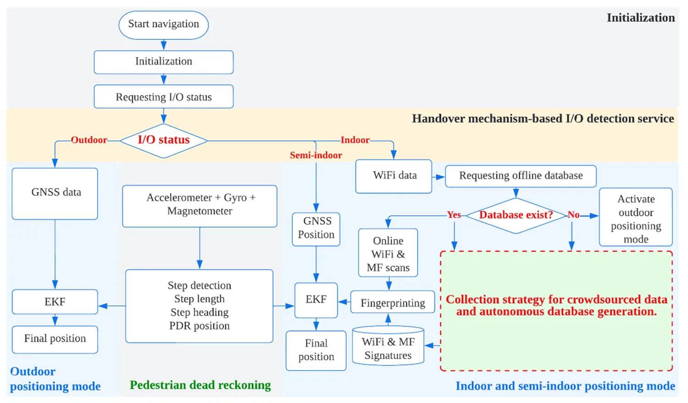
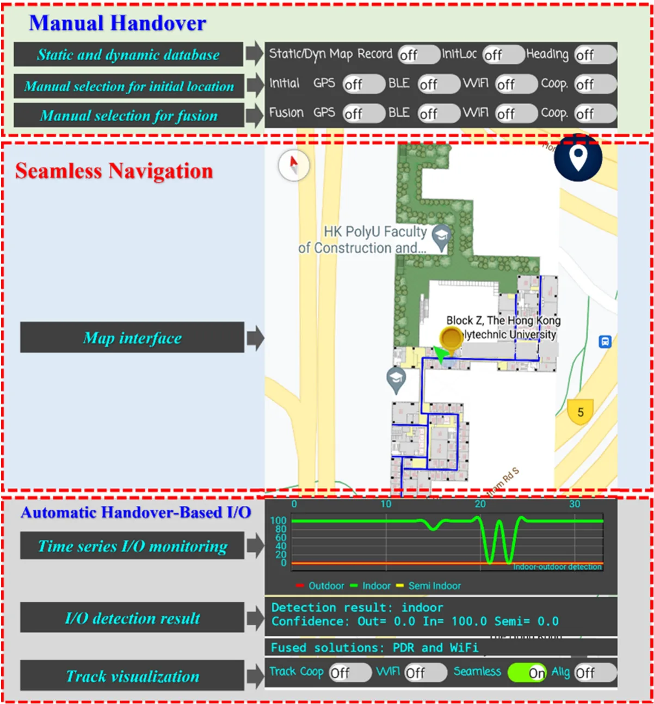
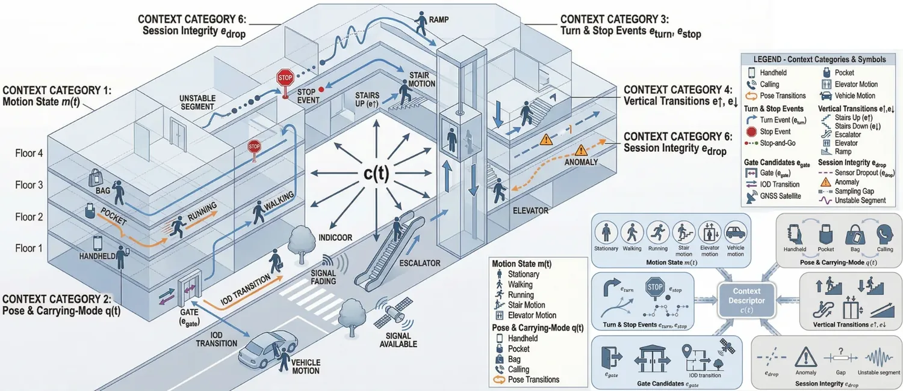

SUNS: A User-Friendly Scheme for Seamless and Ubiquitous Navigation Based on an Enhanced Indoor-Outdoor Environmental Awareness Approach
Paper preview

Research story and quick reading guide
SUNS addresses a very practical navigation problem: people do not move only inside or only outside. They move through entrances, corridors, lobbies, streets, semi-open zones, elevators, and transitional spaces. A navigation system that works well in only one environment can still fail as a user crosses a door or moves from GNSS-friendly outdoor space into an indoor area where GNSS becomes weak or unavailable. The paper therefore places indoor-outdoor awareness at the center of seamless navigation. Rather than treating IOD as a small classification module, SUNS frames it as a core requirement for maintaining continuity in LBS.
The motivation is strongly user-oriented. A regular user may not know which positioning source is active, which sensors are consuming energy, or why the navigation solution suddenly becomes unstable near building entrances. A useful navigation scheme should hide this complexity and make the transition between environments as smooth as possible. SUNS responds by using environmental awareness to support positioning-mode selection and sensor activation. The system aims to identify whether the user is indoors, outdoors, or in a transition-relevant context, then use this knowledge to support a more seamless navigation experience.
The technical story can be summarized as environment recognition → context-aware positioning choice → reduced user burden → continuous navigation. This flow is important because it connects sensing decisions to service quality. If the system knows the environmental state, it can avoid blindly activating all possible sensors or relying on a single positioning source that may not be suitable. This contributes to both usability and resource awareness, which are essential for smartphone-based navigation.
The paper also helps clarify why IOD is different from ordinary activity recognition. The decision is not only a label; it affects which localization subsystem should be trusted, how the system should manage energy, and how quickly it should respond to transition events. A delayed or wrong IOD decision can break navigation continuity even if the underlying indoor and outdoor localization methods are individually strong. SUNS therefore provides an early and useful reference for IOD as a decision layer in seamless positioning.
For readers, the paper is easy to interpret through the symbol chain outside ↔ transition ↔ inside. The contribution is to make this chain operational by sensing the environment and guiding navigation behavior. This makes the paper relevant to indoor navigation, seamless localization, smartphone sensing, context awareness, and transition-aware LBS.
This paper should be cited when discussing indoor-outdoor detection, seamless indoor-outdoor navigation, environmental awareness, smartphone-based context sensing, user-friendly positioning, and the design of navigation systems that must operate across changing environments without requiring users to manage the positioning mode manually.
Extended summary
This paper presents SUNS, a user-friendly seamless navigation scheme based on enhanced indoor-outdoor environmental awareness for switching and integrating positioning resources across environments.
Key visual explanation
These selected visuals help readers understand the method quickly before reading the full paper.



When to cite this paper
- indoor-outdoor detection supports seamless navigation
- smartphone positioning systems switch across indoor, semi-outdoor, and outdoor environments
- environmental awareness is used for navigation mode selection
- seamless IPS/GNSS/PDR integration is reviewed
Keywords
seamless navigationindoor-outdoor detectionenvironmental awarenesssmartphone positioningPDRGNSSWi-Fiuser-friendly navigation
Official link
https://doi.org/10.3390/rs14205263
For publisher-restricted articles, link to the DOI or an allowed accepted manuscript rather than uploading a restricted PDF.
BibTeX
@article{Mansour2022suns,
title = {SUNS: A User-Friendly Scheme for Seamless and Ubiquitous Navigation Based on an Enhanced Indoor-Outdoor Environmental Awareness Approach},
author = {Ahmed Mansour and Wu Chen},
year = {2022},
journal = {Remote Sensing},
doi = {10.3390/rs14205263},
}